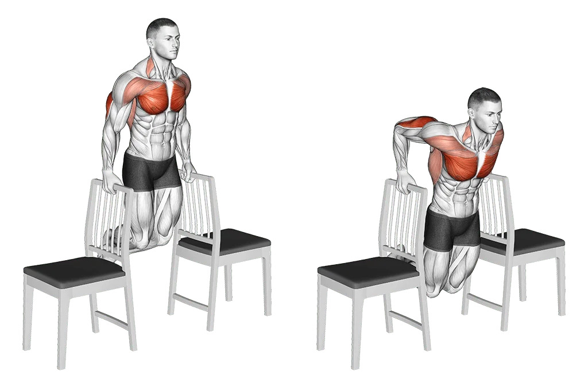
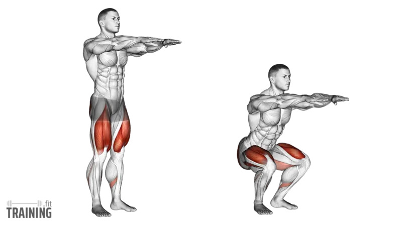
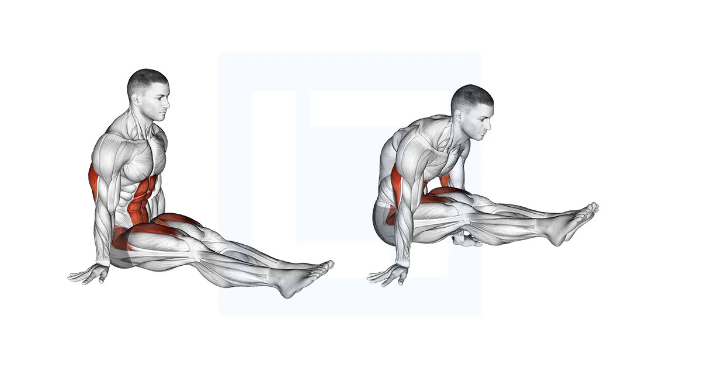
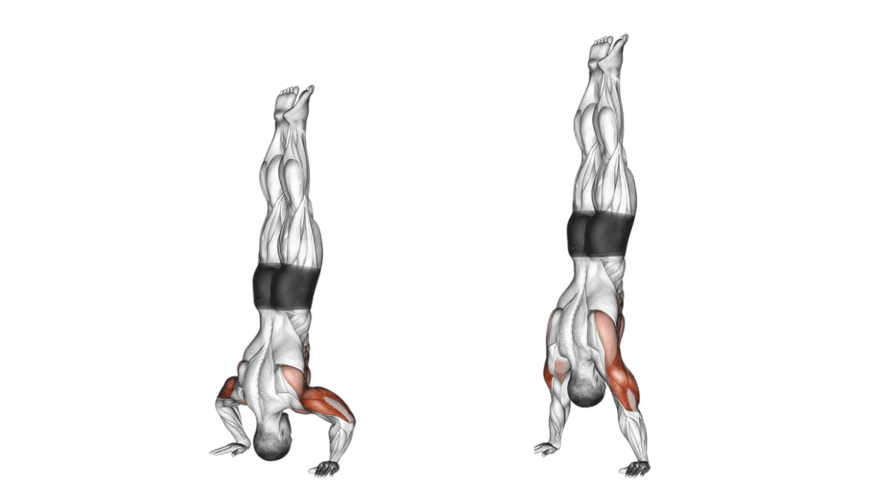
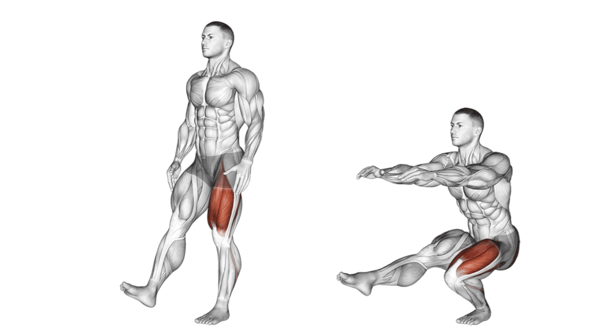
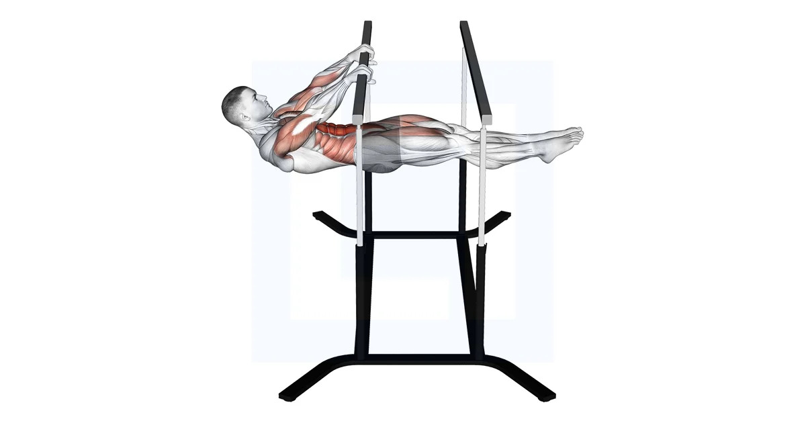
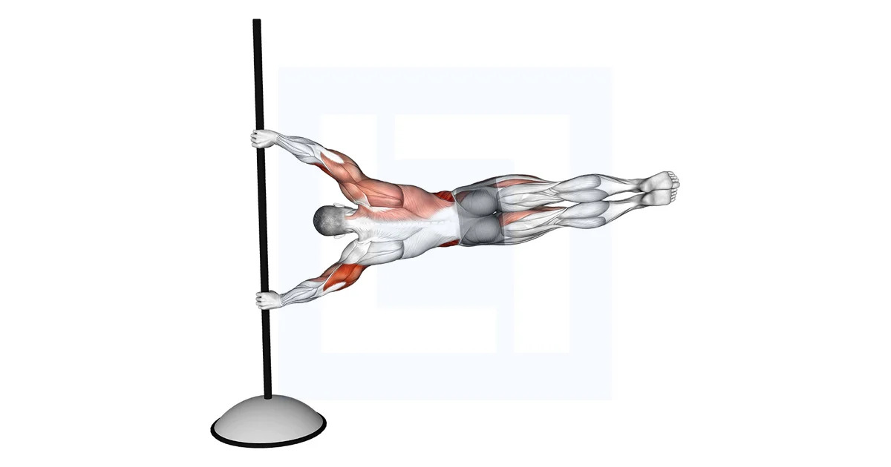
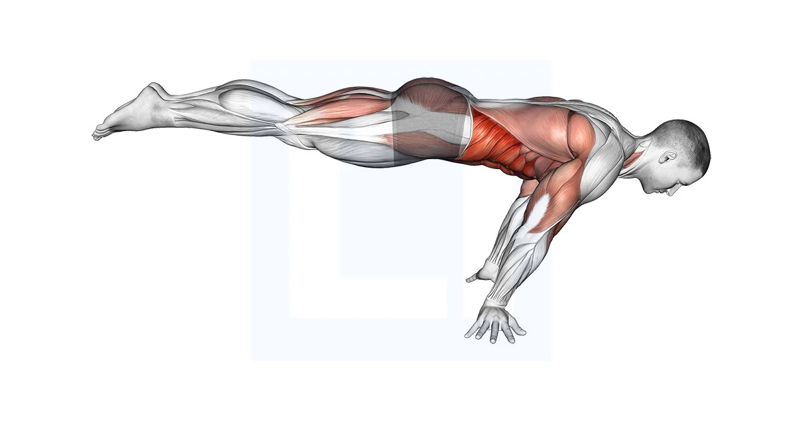
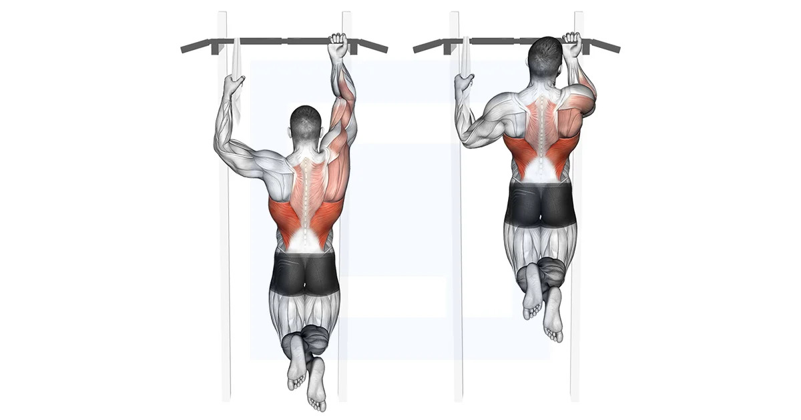

Les Figures de Calisthénie
Découvrez les mouvements emblématiques et leur progression
Débutant Figures de base
Ces figures sont accessibles à tous et constituent les fondations de la Calisthénie. Maîtrisez-les avant de progresser vers des mouvements plus complexes.
-
🟢 Push-ups (Pompes)
 Exercice fondamental qui renforce les pectoraux, les épaules et les triceps. Gardez le corps aligné et descendez jusqu'à ce que votre poitrine touche presque le sol.Tuto pour réaliser cette figure
Exercice fondamental qui renforce les pectoraux, les épaules et les triceps. Gardez le corps aligné et descendez jusqu'à ce que votre poitrine touche presque le sol.Tuto pour réaliser cette figure -
🟢 Pull-ups (Tractions)
 Mouvement essentiel pour le dos et les biceps. Partez d'une position bras tendus et montez jusqu'à ce que votre menton dépasse la barre.Tuto pour réaliser cette figure
Mouvement essentiel pour le dos et les biceps. Partez d'une position bras tendus et montez jusqu'à ce que votre menton dépasse la barre.Tuto pour réaliser cette figure -
🟢 Dips (Répulsions)Exercice puissant pour les triceps et la poitrine. Descendez en pliant les coudes jusqu'à 90 degrés, puis repoussez.Tuto pour réaliser cette figure
-
🟢 Squats (Flexions)Mouvement de base pour les jambes. Descendez comme si vous vous asseyiez, gardez le dos droit et les genoux alignés avec les pieds.Tuto pour réaliser cette figure
Intermédiaire Figures statiques et dynamiques
Ces mouvements demandent plusieurs mois d'entraînement régulier et une bonne maîtrise des bases.
-
🔶 Muscle-up
 Mouvement explosif combinant traction et dips. Nécessite une grande force et une bonne technique pour passer au-dessus de la barre.Tuto pour réaliser cette figure
Mouvement explosif combinant traction et dips. Nécessite une grande force et une bonne technique pour passer au-dessus de la barre.Tuto pour réaliser cette figure -
🔶 L-sit (Position en L)Figure statique où vous maintenez vos jambes tendues à l'horizontale en restant suspendu ou en appui. Renforce intensément les abdominaux et les fléchisseurs de hanches.Tuto pour réaliser cette figure
-
🔶 Handstand Push-ups (Pompes en équilibre)Pompes réalisées en position d'équilibre sur les mains, contre un mur ou en libre. Développe une force exceptionnelle des épaules.Tuto pour réaliser cette figure
-
🔶 Pistol Squats (Squat sur une jambe)Flexion complète sur une jambe, l'autre tendue devant. Demande force, équilibre et mobilité.Tuto pour réaliser cette figure
Avancé Figures d'élite
Ces mouvements représentent le sommet de la Calisthénie et nécessitent des années d'entraînement dédié.
-
♦️ Front Lever (Drapeau avant)Position horizontale suspendu à une barre, corps parfaitement aligné et parallèle au sol. Requiert une force colossale du dos et des abdominaux.Tuto pour réaliser cette figure
-
♦️ Human Flag (Drapeau humain)Corps horizontal maintenu latéralement sur une barre verticale. Figure spectaculaire nécessitant une force exceptionnelle des obliques et des épaules.Tuto pour réaliser cette figure
-
♦️ Full-Planche (Planche)Équilibre sur les mains avec le corps parallèle au sol, bras tendus. La figure reine de la Calisthénie en terme de difficulté.Tuto pour réaliser cette figure
-
♦️ One Arm Pull-up (Traction à un bras)Traction réalisée avec un seul bras. Démontre une force et un contrôle exceptionnels.Tuto pour réaliser cette figure
💡 Conseils pour progresser
- Soyez patient : chaque figure demande du temps pour être maîtrisée
- Travaillez les progressions : décomposez les mouvements complexes en étapes plus simples
- Échauffez-vous toujours avant l'entraînement pour éviter les blessures
- La régularité est plus importante que l'intensité : entraînez-vous 3-4 fois par semaine
- Filmez-vous pour corriger votre technique
- Travaillez votre mobilité en parallèle de la force